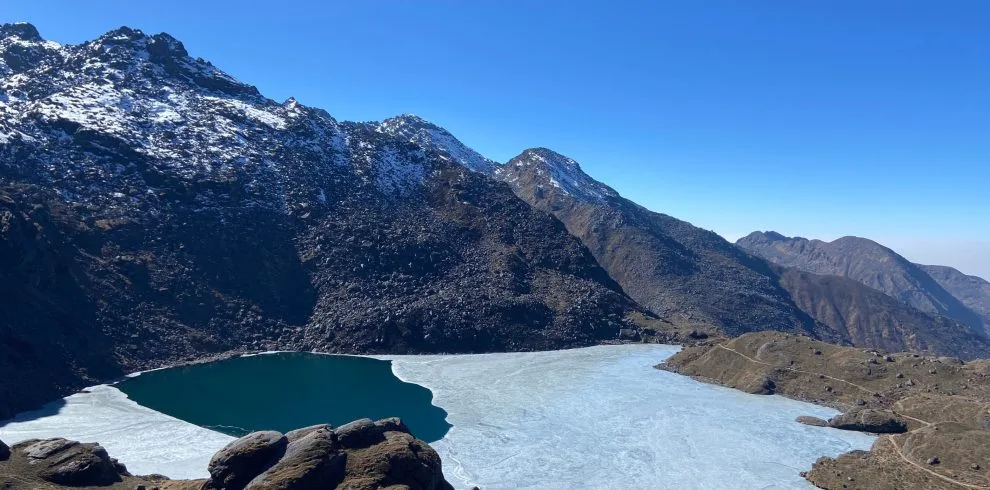
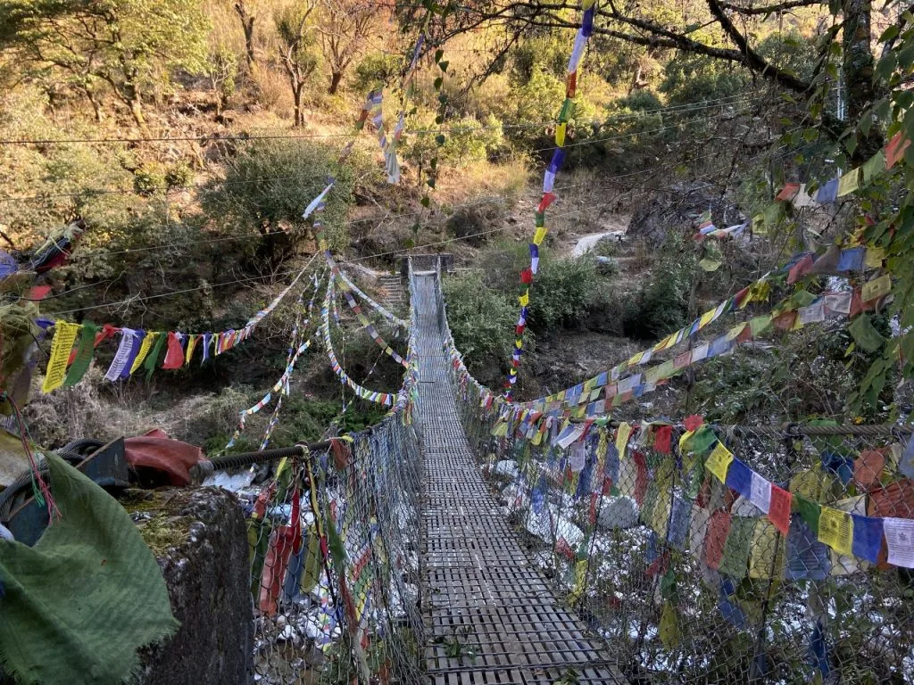
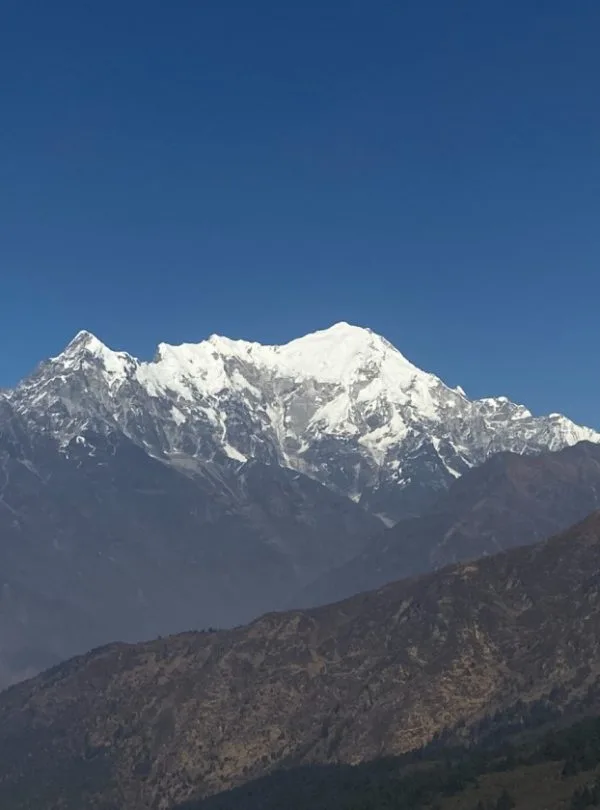
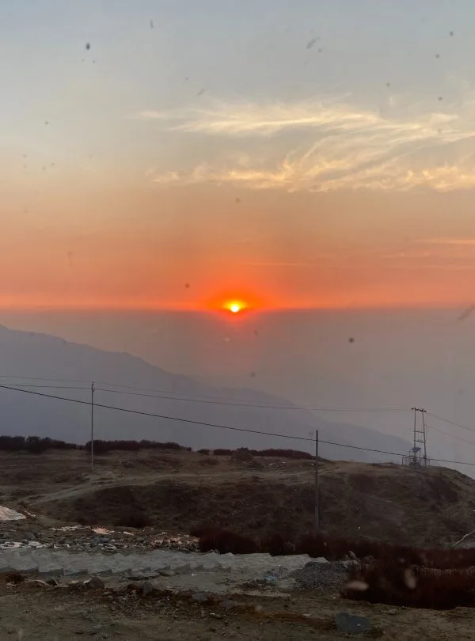

Gosaikunda Trek — 6 Days
Walk from Dhunche to Gosaikunda Lake on our six-day journey in Nepal’s Langtang region. Follow forest trails via Deurali, Chandanbari and Lauribina before reaching the sacred lake at approximately 4,380 metres.





Key Trip Facts
Essential Expedition Specifications6‑Day Gosaikunda Lake Trek Overview
Our six-day Gosaikunda Trek follows the direct Dhunche approach to the sacred lake in Langtang National Park. Walk via Deurali, Chandanbari and Lauribina, reaching Gosaikunda at approximately 4,380 metres before returning to Deurali. The programme begins and ends in Kathmandu, with road access to Dhunche and four days that include walking on the mountain route.
An early drive from Kathmandu reaches Dhunche, where the walking route begins. Forest paths climb towards Deurali, your first mountain overnight stop. The following day continues via Dhimsa and Chandanbari, also called Sing Gompa, before climbing past Cholangpati towards Lauribina. Trees gradually give way to more open ground. Clear weather can reveal the Langtang and Ganesh Himal ranges, while cloud may obscure the surrounding mountains at any time.
Gosaikunda is a pilgrimage destination associated with Shiva and visited by Hindu and Buddhist devotees. Prayer flags and religious features accompany the lake setting. On Day 4, we visit the lake and return along the approach trail to Deurali. Respect local worshippers, keep the shoreline clean and ask before photographing people or entering religious spaces.
This short programme includes a rapid ascent from Deurali to Lauribina and has no dedicated acclimatisation day. It requires more than general fitness: review the sleeping elevations and your previous altitude experience before booking. Extra nights may be needed for a slower approach. The lake visit depends on health, weather and trail conditions, followed by a substantial descent that afternoon.
The package includes guiding, porter support, mountain meals and seasonal fruits. Basic teahouses provide the trekking accommodation, with hotel nights in Kathmandu before and after the mountain journey.
6‑Day Gosaikunda Lake Trek Highlights
Why Book the 6‑Day Gosaikunda Lake Trek with Igloo Himalaya Treks?
We arrange guiding, porter assistance, mountain accommodation and scheduled transport for your Gosaikunda journey. These services support the six-day programme.
Trek Briefing and Gear Check
Before leaving Kathmandu, we explain the walking stages, check equipment and review your documents. Discuss the rapid ascent, previous altitude experience and any concerns before confirming this compact programme.
Guide and Porter Support
Your package includes a licensed, English-speaking guide and one porter for every two trekkers. Your guide leads the route and explains local landmarks, while your porter carries your main trekking bag.
Equipment Provided for the Trek
We supply a sleeping bag, down jacket and duffel bag for use during the trek. All three items must be returned afterwards. Bring personal boots, clothing, medicines and other daily essentials.
Communication When Plans Change
Road closures, snowfall and poor visibility can affect the drive or lake visit. We explain the options and discuss additional costs when changes are needed. Health and conditions determine the daily plan.
Our six-day itinerary includes Kathmandu arrival and departure, the drive to Dhunche and four walking days. Times and distances are estimates; weather, road access, altitude symptoms and group pace can change the daily programme.
Day 1: Arrival in Kathmandu
Welcome to Nepal. Our representative meets you at Tribhuvan International Airport and accompanies you to your hotel. After settling in, review the trekking programme, equipment and documents with the team, allowing time to discuss your questions beforehand.
Depending on your arrival time, rest after the flight or explore nearby Thamel. Complete preparations for tomorrow’s early road departure. Discuss your altitude experience and any medical concerns with the team beforehand.
Day 2: Drive to Dhunche and Trek to Deurali
Day 3: Trek from Deurali to Lauribina
Day 4: Visit Gosaikunda Lake and Return to Deurali
Day 5: Trek to Dhunche and Drive to Kathmandu
Day 6: Final Departure from Kathmandu
What’s Included & Excluded
What’s Included in the 6‑Day Gosaikunda Lake Trek
- Airport transfers: Pickup and drop-off for your arrival and departure in Kathmandu.
- Road journeys: Scheduled private ground transport between Kathmandu and Dhunche for the agreed itinerary, with vehicle arrangements confirmed beforehand.
- Accommodation: Two nights in a 3-star Kathmandu hotel with breakfast, plus three teahouse nights during the trek on a twin-sharing basis. Mountain bathrooms are generally shared.
- Meals: Breakfast in Kathmandu; breakfast, lunch and dinner during the trek, with seasonal fruits included. Tell us about dietary requirements beforehand. Drinks, additional snacks and other personal orders cost extra.
- Guide and porter: A licensed, English-speaking trekking guide and one porter for every two trekkers.
- Permits and documentation: Langtang National Park entry permit and required TIMS arrangements, with coverage confirmed in your quotation.
- Trekking equipment: A sleeping bag, down jacket and duffel bag are supplied for use during trekking and must be returned afterwards.
- First-aid supplies: A basic medical kit carried by your licensed trekking guide.
- Staff insurance: Coverage and employment costs for the guide and porter.
- Trip extras: A trekking map, completion certificate, government taxes and agency service charges included.
What’s Not Included in the 6‑Day Gosaikunda Lake Trek
- International flights and Nepal visa: Airfare to and from Nepal and your visa fee.
- Travel insurance: Your policy must cover this high-altitude trekking route, emergency helicopter evacuation and medical treatment.
- Rescue and medical expenses: Evacuation, treatment and related personal costs, even when the team coordinates assistance.
- Personal trekking equipment: Boots, clothing, toiletries, medicines and other personal items beyond the sleeping bag, jacket and duffel supplied.
- Extra food and drinks: Snacks, bottled water, soft drinks, alcoholic drinks and additional orders beyond included meals and seasonal fruits.
- Other Kathmandu meals: Lunches and dinners outside the agreed programme, including all arrival-day meals.
- Teahouse services: Hot showers, Wi-Fi, laundry and charging fees.
- Guide and porter tips: Gratuities for your trekking team.
- Additional accommodation or transport: Extra costs for delays, road closures, itinerary changes, personal extensions and services outside the agreed programme.
6‑Day Gosaikunda Lake Trek Dates & Availability
Group Departures
If you would like to trek with other travellers, ask about upcoming group departures. We’ll confirm available dates, guide arrangements and the price for your Gosaikunda departure.
Private Trek Dates
Prefer to travel with your own group? Send your preferred arrival date and number of travellers. We’ll check the arrangements and confirm your private quotation.
Starting Prices
| Number of travellers | Starting price per person |
|---|---|
| 1 person | From USD 395 |
| 2–4 people | From USD 315 |
| 5–9 people | From USD 285 |
| Other group sizes | Request a quote |
Prices are in US dollars and represent starting rates. Send your travel dates and group size to confirm availability, included services and the final quotation.
What to Pack for the 6‑Day Gosaikunda Lake Trek
Pack layers for warm forest walking, cold lodge nights and the exposed approach to Gosaikunda Lake. Keep water, food, weather protection, medicines and valuables in your daypack. Your porter carries the agreed main luggage; confirm the weight allowance beforehand.
Hiking Gear
- Comfortable, waterproof trekking boots, worn in before the trip.
- Three to four pairs of trekking socks.
- Daypack with a rain cover.
- Trekking poles.
- Reusable water bottles or a hydration bladder, plus water-treatment supplies.
- Lightweight camp shoes or sandals.
- Traction aids when advised for snowy conditions.
Clothing
- One to two thermal tops and one thermal bottom.
- Two to three moisture-wicking T-shirts.
- One to two long-sleeved trekking shirts.
- One to two pairs of quick-drying trekking trousers.
- Fleece or another warm mid-layer.
- Waterproof, windproof jacket with a hood and waterproof overtrousers.
- Warm hat, sun hat and buff or neck gaiter.
- Warm gloves and waterproof outer gloves.
- Quick-drying underwear and comfortable sleepwear.
Sleeping Equipment
- Sleeping bag: provided by us and returned after the trek.
- Optional sleeping bag liner for personal comfort.
Toiletries & Hygiene
- Toothbrush, toothpaste and biodegradable soap.
- Quick-drying towel, hand sanitiser and toilet paper.
- Sunscreen, SPF lip balm and moisturiser.
- Personal prescription medicines and blister dressings.
- Menstrual products and other personal hygiene items, as needed.
Electronics
- Headlamp with spare batteries.
- Phone or camera.
- Power bank and charging cables.
- Travel plug adapter.
Documents & Personal Items
- Passport and copies of important documents.
- Passport photographs for documentation if required.
- Travel insurance details and emergency contact information.
- Cash in Nepali rupees for personal expenses.
- UV-protective sunglasses.
- Waterproof pouch for documents and dry bags for clothing and electronics.
- Optional snacks, such as energy bars, nuts or dried fruit.
We supply a duffel bag. Your guide checks equipment in Kathmandu before departure. Return the supplied bags and jacket afterwards; keep documents, money and electronics with you.
Read Before You Book
Crucial trip logistics, safety, and health guidelinesBefore booking your 6-Day Gosaikunda Lake Trek, consider the combined travel days, steep climbs and rapid altitude gain. These details help you assess the itinerary, prepare your equipment and understand the arrangements.
Altitude Profile of the 6‑Day Gosaikunda Lake Trek
Your first mountain night is at Deurali, above Dhunche. The following stage reaches Lauribina, the highest overnight stop, after a substantial increase in sleeping altitude. Gosaikunda Lake is a daytime visit before returning to Deurali. The table separates sleeping elevations from the higher lake excursion.
Overnight Altitudes
| Day | Overnight stop | Approximate altitude |
|---|---|---|
| Day 1 | Kathmandu | 1,400 m / 4,593 ft |
| Day 2 | Deurali on the Dhunche approach | 2,500 m / 8,202 ft |
| Day 3 | Lauribina / Laurebina | 3,900 m / 12,795 ft |
| Day 4 | Deurali | 2,500 m / 8,202 ft |
| Day 5 | Kathmandu | 1,400 m / 4,593 ft |
| Day 6 | Departure | No overnight stay |
Higher Places You Visit
- Day 2 — Dhunche: Around 1,960 m, reached by road before the uphill walk to Deurali.
- Day 3 — Chandanbari: Around 3,330 m, passed on the climb from Deurali towards the Lauribina lodges.
- Day 3 — Lauribina: Around 3,900 m, the highest overnight stop, after a steep climb from Deurali.
- Day 4 — Gosaikunda Lake: Around 4,380 m, the highest point, before descending steadily to Deurali.
Deurali is used before and after the lake excursion. The schedule includes no separate acclimatisation day. Lauribina remains the only overnight stop above 3,000 metres.
Weather and Best Time for the 6‑Day Gosaikunda Lake Trek
Spring, from March to May, and autumn, from September to November, generally suit the Dhunche approach to Gosaikunda. Both offer opportunities for mountain views, although cloud, snow, ice and cold remain possible higher on the route. Check current weather, road access and trail conditions.
Seasonal Weather Conditions
| Season | Months | What to expect |
|---|---|---|
| Spring | March–May | Lower forests become warmer, with possible rhododendron flowers. March can retain winter snow higher on the trail. Clear mornings are possible, while afternoon cloud and changing weather can affect mountain visibility. |
| Autumn | September–November | Early September can retain monsoon rain and access damage. October and November often offer clearer mountain views, with colder nights later in the season. Road and trail conditions still require current checks. |
| Winter | December–February | Cold, snow, ice and shorter daylight can disrupt the lake visit. Lodge operations and route access vary. Do not assume that the upper trail will be passable on a particular departure. |
| Monsoon | June–August, sometimes extending into September | Rain can make forest paths slippery and damage the Dhunche road. Cloud may hide mountain views. Pilgrimage dates can bring busy lodges and trails; confirm festival timing and accommodation before choosing dates. |
How Weather Changes Along the Route
Walking near Dhunche and Deurali can feel warm in sunshine. Conditions become colder towards Chandanbari, Lauribina and Gosaikunda, particularly before dawn and after sunset, with wind increasing the chill considerably. Even during spring and autumn, nights at Lauribina can fall below freezing. The upper lake approach may feel colder in wind or snow. Carry warm layers, gloves and weather protection, and check conditions before starting the highest walking stage.
Which Season Should You Choose?
Choose spring for warming days and flowering forest sections. Choose autumn for mountain views after the rains. Winter snow can block the upper trail, while monsoon rain can damage roads and paths. Both seasons need flexibility and current local checks.
Trekker Reviews & Experiences
Authentic feedback from travellers who completed the Gosaikunda Lake route“The six-day Gosaikunda itinerary was compact and challenging, but reaching the sacred lake under clear blue skies was unforgettable. The climb from Deurali to Lauribina is definitely steep, but our guide Sagar set a very steady pace and monitored our oxygen levels twice daily. Sing Gompa cheese factory was a delightful stop! Highly recommend Igloo Himalaya Treks for their professional support.”
“The views of the Langtang and Ganesh Himal peaks from Lauribina at sunrise were worth every step. The provided sleeping bag and down jacket kept me warm during cold nights at Lauribina lodge. Everything from the Kathmandu airport pickup to private jeep transfer to Dhunche was flawless.”